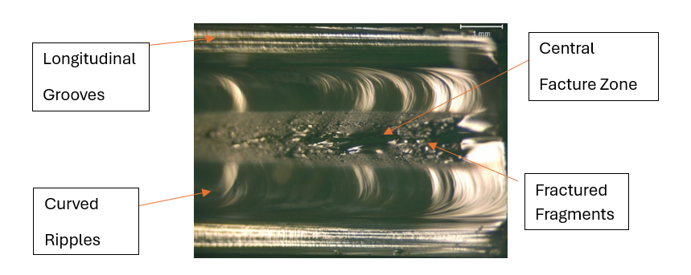
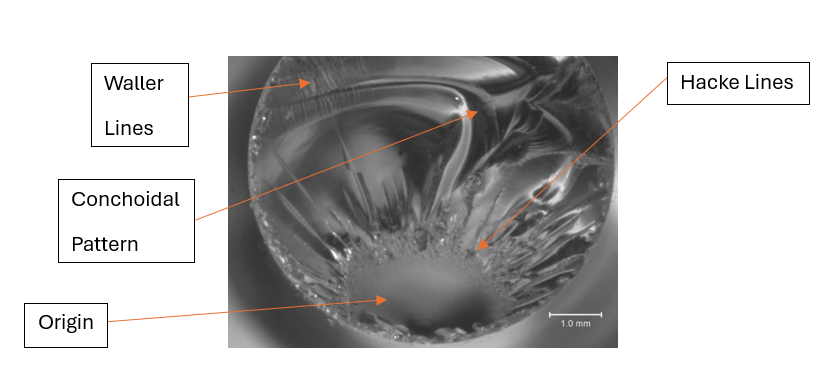
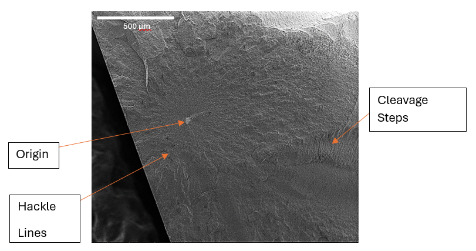

Qualitative Fractography: Failure Analysis
Optical microscopy analysis of fracture principles in glass and ceramics.
The Analysis
This study analyzed the fractography features of glass, ceramics, and polycrystalline materials to establish core failure principles. By examining how microstructural properties dictate fracture patterns, we identified the influence of material homogeneity on crack propagation.

Fig 1: Technical sketch illustrating crack propagation from the origin through the mirror, mist, and hackle regions.
1. Amorphous vs. Crystalline Behavior
Glass samples exhibited uniform, predictable fracture behavior with clear shiny surfaces. In contrast, polycrystalline and ceramic materials showed complex microstructures that resulted in rougher, irregular fracture surfaces and diffuse hackle lines.

Fig 2: Optical micrograph of a glass rod showing clear origin and radiating hackle lines.
2. Stress Concentration
Sample geometry proved critical in fracture initiation. Observations confirmed that sharp corners act as stress concentrators, initiating propagation paths that fundamentally alter the loading of the crystal structure.

Fig 3: Comparative analysis of irregular fracture surfaces in ceramic square rods.